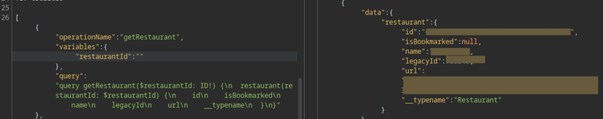
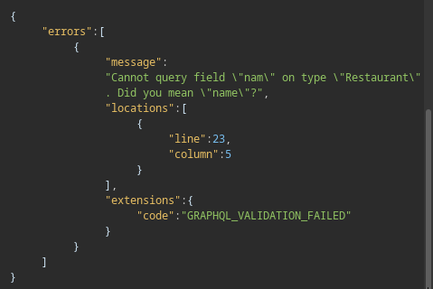
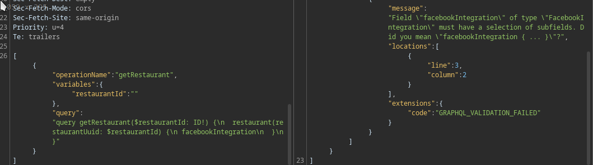

The target was a restaurant booking website, which enables users to signup, search, book restaurants
If you are not familiar with graphql here is an explanation from our friend deepseek:
GraphQL is a query language for APIs that lets clients request exact data they need (no over/under-fetching). Unlike REST:
First, I used the website as a normal user, and i noticed that it uses graphql to fetch restaurants public information such as name, address…etc using restaurant id,
The graphql endpoint was domain.com/api/graphql, I checked introspection and it was disabled, and suggestions was disabled also. portswigger reference
Then, i tried to find other graphql endpoint in other subdomains, so I used this nuclei template
After that, I found other graphql endpoint, I checked every endpoint and I found one like sub.domain.com/api/graphql that has graphql suggestions enabled (I observed that when i use incomplete fields or a non existing fields, i get some suggestions)
After that, an idea came to my mind, I downloaded this wordlist: https://raw.githubusercontent.com/Escape-Technologies/graphql-wordlist/refs/heads/main/wordlists/10k/fieldWordlist-10k.txt and fuzzed the fields with burp intruder.
A field captures my attention, it was facebookIntegration, but it requires subfields.
so i used the same wordlist to fuzz the subfields and i found the subfield: accessToken which leak facebook accessToken, with this token i was able to access restaurant’s ads campaign and other information.